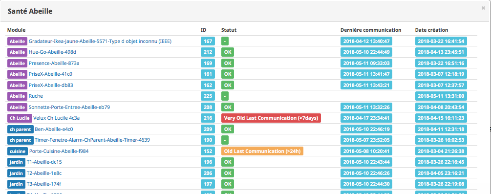
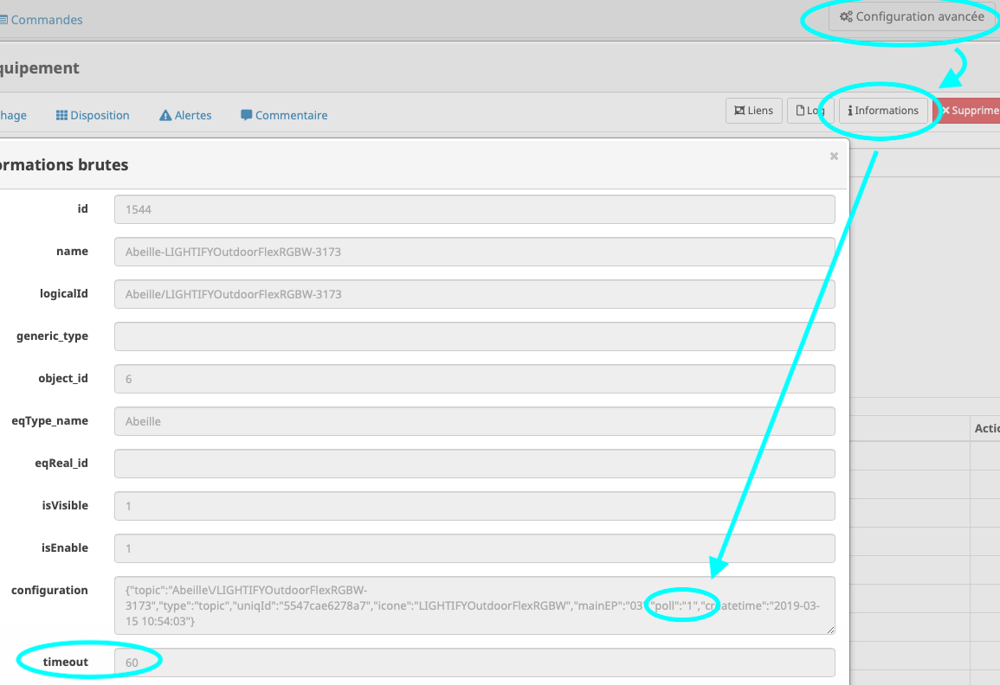
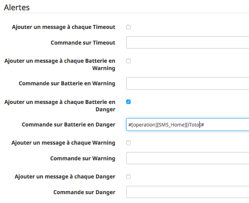
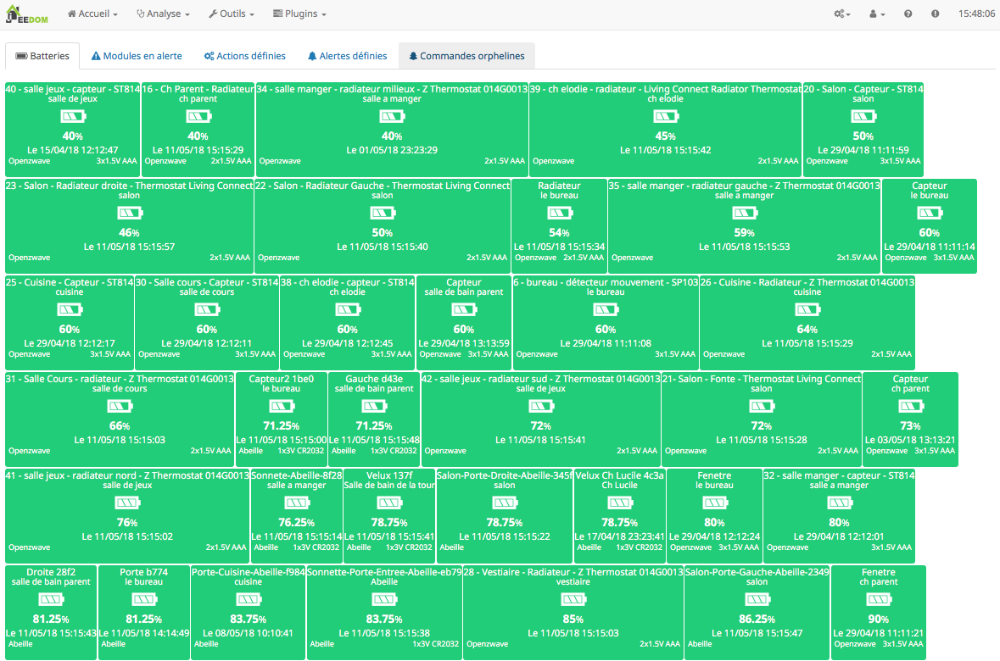
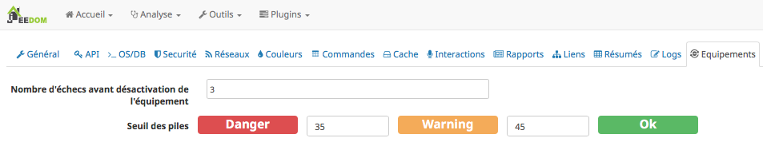
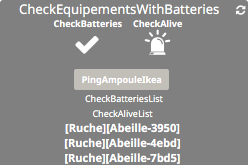
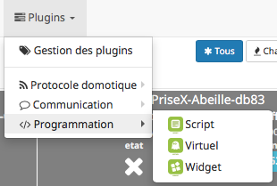
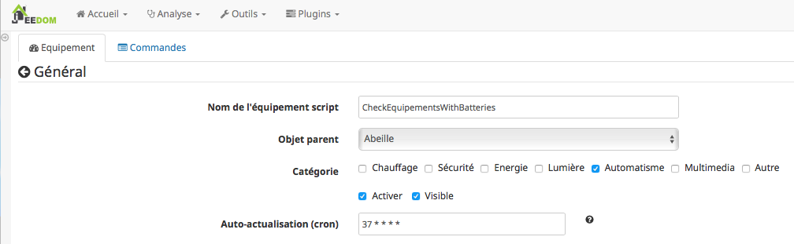
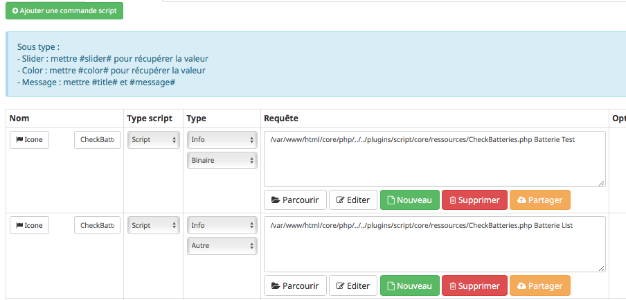
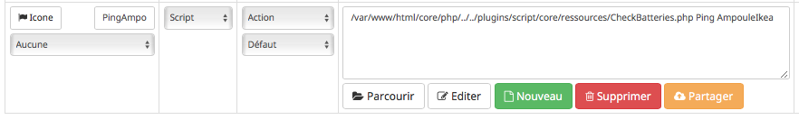

Santé¶
Statut des équipements¶
Dans cette page vous trouverez des informations relatives à l’état de fonctionnement des équipements.
Dans cette table vous trouverez: - Le nom de l’équipement ainsi que son objet de rattachement. Vous pouvez cliquer dessus pour ouvrir l’équipement. - Son ID, qui est la référence dans la base Jeedom - Son statut, voir les détails ci dessous. - La date de derniere communication, c’est la date du dernier message reçu par la zigate venant de cet équipement. - La date de création de l’équipement dans Jeedom.
Actuellement il existe 4 statuts:
Un carré vert avec un « -« : Pas de test fait. Par exemple Abeille ne reçoit pas de message venant d’une télécommande Ikea n’ont paramétré spécifiquement, fonctionnement par défaut.
Un carré vert avec Ok, soit l’équipement à un timeout de défini et le dernier message est arrivé dans cette période, soit il n’y en a pas et un message à été reçu dans le 24 dernières heures.
un carré orange, l’équipement n’a pas de time out défini et le dernier message est plus vieux que 24h et moins que 7 jours (Il faut que je vérifie les timing)
un carré rouge, soit le capteur à un time out et le dernier message est plus vieux que ce time out, soit il n’a pas de time out et le dernier message est plus que 7 jours.
Si l’équipement n’a pas de TimeOut defini ou est null alors il ne tombera pas en time out.
Pour rafraichir ces informations, un cron tourne toutes les minutes (il faut donc attendre une minute et rafraichir la page) pour vérifier la date du dernier message reçu pour chaque équipement.
TimeOut¶
Les timeout …
Je vais essayer de vous éclairer. J’ai introduit cette notion pour essayer de voir si un équipement est en vie ou non. Je veux dire par la qu’il est dans le réseau zigbee et en capable de faire ce qu’on lui demande. Chaque équipement dans abeille possede la date du dernier message reçu. Chaque fois qu’Abeille reçoit un message provenant d’un équipement, Abeille met à jour cette date. Toutes les minutes Abeille regarde si cette date est plus vieille que la valeur du TimeOut de l’équipement et si c est le cas le déclare en TimeOut. Si un équipement est en timeout il peut y avoir plein de raison. Voici quelques cas classiques.
les ampoules n’envoient pas d’informations par defaut à Abeille. Pour contrecarrer ce point, Abeille interroge les ampoules de temps en temps pour avoir une réponse qui provoque la mise à jour la date.
Il faut que le modèle utilisé par Abeille pour l’équipement soient bien defini, par exemple la valeur du timeout, ce qui n’est pas forcement le cas.
Les equipements xiaomi par defaut remontent des infos environ toutes les heures ce qui doit mettre à jour la date, si Abeille décode le message.
…
En gros le TimeOut ne veut pas dire que l’équipement ne fonctionne pas mais est une indication qu’il y a un soucis:
bug Abeille
problème de Configuration
equipement hors de portée du réseau Zigbee
probleme de routage dans le reseau Zigbee
probleme avec la zigate qui ne transmet pas les Messages
…
Alerte¶
Alerte sur communications
Si un équipement possède un timeout défini alors des alertes peuvent être définies.
Pour les developpeurs, Il faut par exemple dans le fichier modele json avoir:
1{
2"Classic A60 RGBW": {
3"nameJeedom": "Classic A60 RGB W",
4"timeout": "60",
5"Categorie": {
6"automatism": "1"
7},
Pour les utilisateurs, le TimeOut est visible dans l’équipement dans le tab « Equipement » sous le nom « Time Out (min) ».
Le TimeOt peut être vérifié dans l’équipement:
Les 60 sont en minutes. Dans ce cas, l’équipement qui n’a pas eu de communications depuis plus de 60 minutes générera des alarmes.
Pour ce faire il faut configurer Jeedom. Allez dans le menu « Rouee Crantée->Configuration->Logs->Alertes »
Puis sélectionné le champ « Ajouter un message à chaque Timeout » .
Vous pouvez aussi ajouter une action dans le champ « Commande sur Timeout ». Par exemple envoyer un sms si vous avez le plugin sms.
La vérification est faite par le core de Jeedom toutes les 5 minutes.
Menu->Roues crantées->Configuration->Logs
par exemple ici, une alarme est envoyée sur mon tél.
Batterie¶
Niveau¶
En utilisant le menu Analyse->Equipements, vous trouverez l’état des batteries. Ici un exemple avec des objets Zwave et Abeille/Zigbee.
Seuil d’alerte¶
Menu->Roues crantées->Configuration->Equipements.
Mettez les valeurs qui vous conviennent:
Script / Widget¶
Dans les premieres versions d’abeille, des scripts étaient nécessaires pour suivre l’état des équipements. Depuis ces scripts ont été inclus dans Abeille et ne sont plus necessaires. Je garde la doc en souvenir et on ne sait jamais pourrai servir dans le futur.
Donc vous pouvez passer tout ce qui est dans le bas de cette page.
Dans les premieres version d’abeille les timeout n’étaient pas implémentés alors ce script permettait d avoir des alarmes. Il n’est plus nécessaire mais je le garde car il peut servir dans des cas spécifiques avec des petites modifications.
Vous aurez un widget comme celui ci:
qui vous permettra d’avoir une alarme sur le niveau de batterie et sur la remontée de message ainsi que la liste des équipements en défaut.
Pour se faire un script est en cours de dev et de test dont voici les détails.
Vous pouvez le faire tourner en manuellement en ssh ou l’intégré dans Jeedom à l’aide du plugin script (Solution présentée ci dessous).
Vous créez un équipement avec une Auto-Actualisation à la fréquence que vous souhaitez, ici toutes les heures.
Script¶
Code¶
Le script dont vous aurez besoin est https://github.com/KiwiHC16/Abeille/blob/master/resources/AbeilleDeamon/CheckBattery.php
Faites un copy/paste dans le plugin script de Jeedom.
Parametres¶
Parametres internes au script
Lorsque vous allez éditer le script dans les étapes suivantes, vous trouverez les lignes suivanted en début de script:
1$minBattery = 30; // Taux d'usage de la batterie pour générer une alarme.
2$maxTime = 24 * 60 * 60; // temps en seconde, temps max depuis la derniere remontée d'info de cet équipement
A vous de mettre, les valeurs qui conviennent à votre systeme.
Juste après vous trouverez:
1// Liste des équipements à ignorer
2$excludeEq = array(
3"[Abeille][Ruche]" => 1,
4"[Abeille][CheckEquipementsWithBatteries]" => 1, // L objet du script lui-meme
5);
C’est le tableau qui contient la liste des Equipements qu’il ne faut pas prendre en compte. Par exemple ici l’objet ruche et l’objet script (c’est à dire lui-même).
Batterie¶
TIP: Dans les premieres version d’abeille les batteries n’étaient pas implémentés alors ce script permettait d avoir des alarmes. Il n’est plus nécessaire mais je le garde car il peut servir dans des cas spécifiques avec des petites modifications.
Créez deux commandes scripts:
Donnez un nom à la commande, faites Nouveau, donnez le nom du script « CheckBatteries.php », dans l’éditeur faites un paste du code, Enregistrer, ajoutez les parametres à la commande et sauvegardez.
Le premier parametre est « Batterie » car nous sommes dans le test des batteries.
Le second paramètre est « Test » pour la première commande pour avoir un retour binaire. 0: pas de Batterie en défaut, 1: au moins une Batterie sous le niveau minimum.
Le second paramètre est « List » pour la seconde commande pour avoir la liste des équipements avec un niveau de Batterie inférieure au niveau miniCheckBatteries.phpmum.
Ping¶
TIP: Dans les premieres version d’abeille les polling n’étaient pas implémentés alors ce script permettait d avoir des alarmes. Il n’est plus nécessaire mais je le garde car il peut servir dans des cas spécifiques avec des petites modifications.
Certains équipements ne remontent pas forcement des informations de facon régulière, comme une ampoule qu’on allume une fois par semaine. Donc pour forcer l’échange de message et vérifier la présence d’un équipement, il y a une fonction « Ping ».
Pour l’instant elle fonctionne pour les ampoules Ikea.
Faites un commande:
En appuyant sur le bouton du widget, les équipements doivent être interrogé et repondre. Ensuite si vous faites un refresh du widget, ils ne doivent plus apparaitre dans la liste Alive s’ils y étaient.